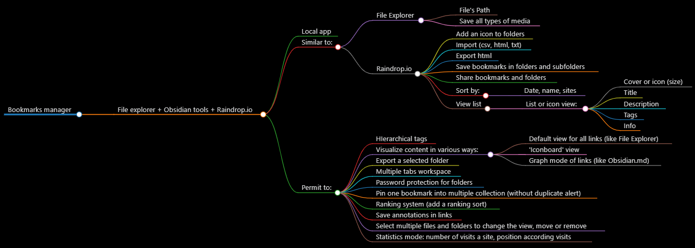

List of bookmark manager apps
After getting the directory with links categorized it is necessarily to have a good software to manage, sort and search the information. The easiest way to do it is to use the bookmark manager of the browser like Chrome or Firefox.
-
With Google Chrome you can use the bookmark manager with chrome://bookmarks or the shortcut Ctr+Shift+O. The app permit to:
- save links with name and url
- create folders and sub-folders
- search folders, links and names
- option to show the folder of a link and
- sort links by name
- import / export links as an HTML
-
With Mozilla Firefox you can use the bookmark manager with the shortcut Ctr+Shift+O. The app permit to:
- save links with name, url, tag and keyword
- create folders and sub-folders
- sort by name, tag, location, most recent visit, visit count, added, last modified, A > Z, Z > A
- search name links and urls, not with folders
- import / export links as an HTML
- backup as json
- restore links from previous days
-
With raindrop.io app you can search for folders, tags and links. It's the best bookmark manager but only works online.
| App | Chrome | Firefox | Raindrop.io | |:--------------------:|:---------:|:--------:|:-----------:| | Graph of bookmarks | --- | --- | --- | | Local / Online | Local | Local | Online | | Search folders | YES | NO | YES | | Stored in local | YES | YES | NO | | Tags | NO | YES | YES |
Here is a mind map of the best tool to create a bookmark manager.
- My own bookmark manager Interneto manager